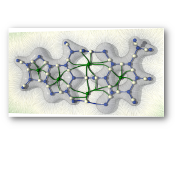

Home Page of Jules Vidal
About
I am currently a research engineer at Sorbonne Université, working on Topological Data Analysis with
Julien Tierny, within the ERC
project TORI .
I defended my PhD thesis on December 8, 2021, on the subject of
Progressivity in Topological Data Analysis.
I'm highly interested in ways to use Topological Data Analysis to visualize and analyze scientific data. My
thesis focused on developing
progressive
algorithms to do so in fast and interactive ways.
jules dot vidal at lip6 dot fr
Research
Publications
First-author
Fast Approximation of Persistence Diagrams with Guarantees
Jules Vidal and Julien Tierny.
IEEE Symposium on Large Data Analysis and Visualization (LDAV), 2021
paper
code
A Progressive Approach to Scalar Field Topology
Jules Vidal, Pierre Guillou and Julien Tierny.
IEEE Transactions on Visualization and Computer Graphics, 2021
paper
code
replicability stamp
video
Others
Wasserstein Distances, Geodesics and Barycenters of Merge Trees
Mathieu Pont, Jules Vidal, Julie Delon and Julien Tierny.
IEEE Transactions on Visualization and Computer Graphics (Proc. of IEEE VIS 21)
paper
code
replicability stamp

Statistical Parameter Selection for Clustering Persistence Diagrams.
Max Kontak, Jules Vidal and Julien Tierny.
Proc. of Super Computing workshop on Urgent HPC 2019
paper

An Overview of the Topology ToolKit
Talha Bin Masood, Joseph Budin, Martin Falk, Guillaume Favelier, Christoph Garth, Charles Gueunet, Pierre Guillou, Lutz Hofmann, Petar Hristov, Adhitya Kamakshidasan, Christopher Kappe, Pavol Klacansky, Patrick Laurin, Joshua A. Levine, Jonas Lukasczyk, Daisuke Sakurai, Maxime Soler, Peter Steneteg, Julien Tierny, Will Usher, Jules Vidal, Michal Wozniak
Upcoming TopoInVis book (accepted).
paper
tutorials

Topological Data Analysis Made Easy with the Topology ToolKit, What is New?
Martin Falk, Christoph Garth, Charles Gueunet, Pierre Guillou, Attila Gyulassy, Lutz Hofmann, Christopher Kappe, Joshua A Levine, Jonas Lukasczyk, Julien Tierny, Jules Vidal
IEEE VIS Tutorials 2020.
report
webpage
Topological Data Analysis Made Easy with the Topology ToolKit, A Sequel
Martin Falk, Christoph Garth, Charles Gueunet, Joshua A Levine, Jonas Lukasczyk, Julien Tierny, Jules Vidal.
IEEE VIS Tutorials 2019.
report
webpage
last updated: 12/12/21